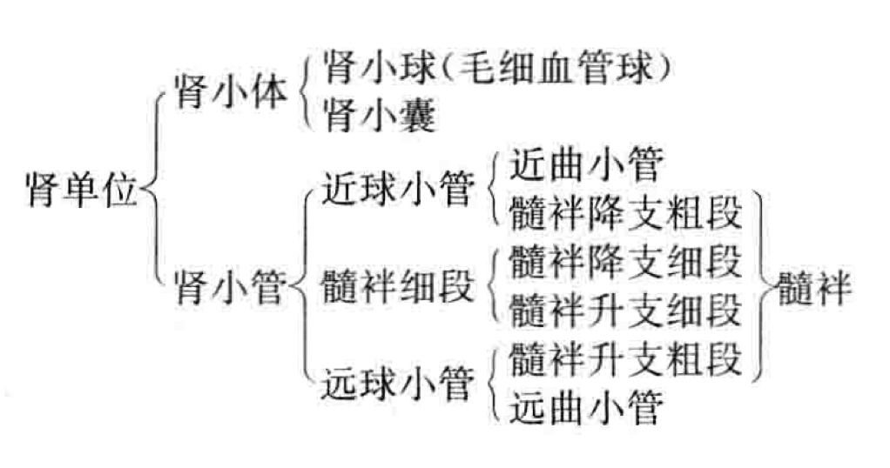
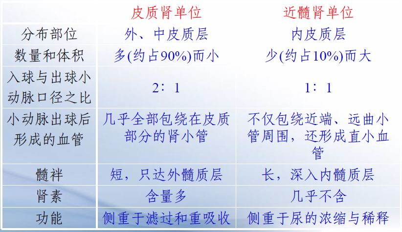
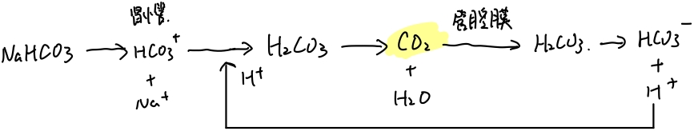
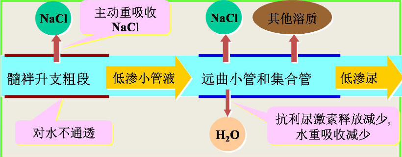
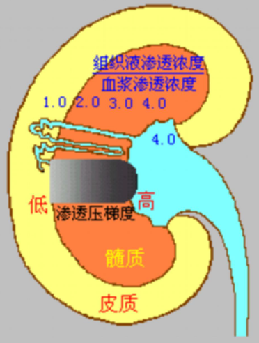
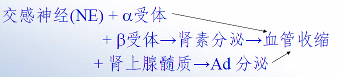
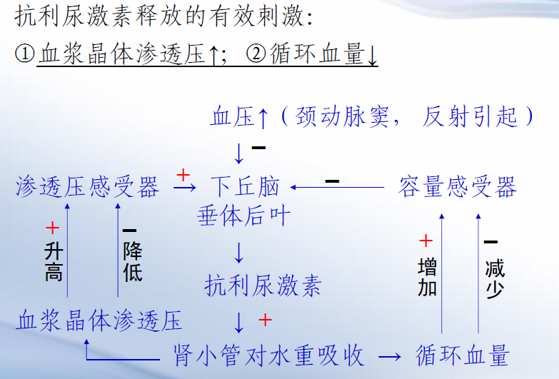
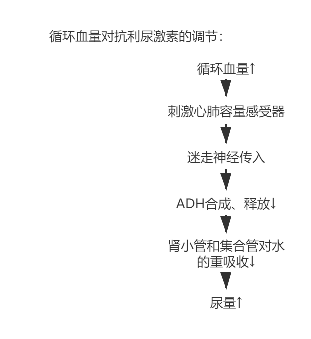
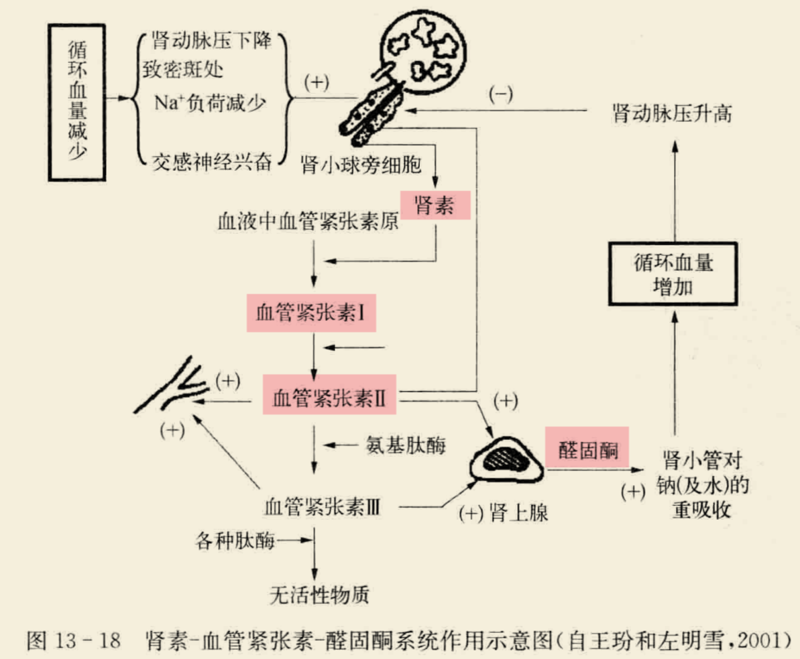

BME | Anatomy - Urinary System
Urinary System
Concept of Excretion
Excretion: The process of eliminating metabolic end products, excess water and inorganic salts, and foreign substances that enter the body during metabolic processes.
Basic Anatomy of the Kidneys
Outer layer cortex, inner medulla.
Cortex = Renal corpuscles (part extending into the medulla called renal columns) + Renal tubules.
Medulla = Renal pyramids.
Base of the pyramid - Renal papilla - Renal calyx - Renal pelvis - Ureter
Basic Concepts in Tissue Structure

Nephron: The basic functional unit of the kidney (= renal corpuscle + renal tubule).
Renal corpuscle: = Renal glomerulus (vascular tuft, connected to afferent and efferent arterioles) + Bowman’s capsule (encloses the glomerulus).
Renal tubule: Comprised of a single layer of epithelial cells. Proximal convoluted tubule, Loop of Henle, Distal convoluted tubule.
Basic Structural Forms of Renal Units, Different Types of Renal Units (Cortex and Medulla, their respective characteristics; one responsible for excretion and absorption, one for concentration and dilution due to differing lengths of tubules)
Renal units can be divided into cortical and medullary units.
Cortical renal units: Predominant. Afferent arteriole larger than efferent, short loop of Henle.
Medullary renal units: Less common. Long loop of Henle, larger renal corpuscles. Efferent arteriole = Vascular network + U-shaped vessels.

Collecting duct: Functions in urine concentration.
Juxtaglomerular apparatus (involved in renin release and regulation) = Juxtaglomerular cells + Macula densa + Extraglomerular mesangial cells.
Basic Characteristics of Renal Blood Flow
- Abundantly supplied and unevenly distributed, low vascular resistance.
- Abdominal aorta → Renal artery → Interlobar artery → Arcuate artery → Interlobular artery → Afferent arteriole → Glomerulus capillary network → Efferent arteriole → Peritubular capillary network and Vasa recta → Interlobular vein → Arcuate vein → Interlobar vein → Renal vein
Normal Physical and Chemical Properties of Urine, Process of Urine Formation: Filtration (location, GFR, filtration fraction, filtration membrane and its permeability, dynamics, influencing factors)
Formation of urine:
- Filtration by renal corpuscles.
- Reabsorption in renal tubules and collecting ducts.
- Secretion and excretion by renal tubules and collecting ducts.
Location: Blood flows through the glomerulus to be filtered into the Bowman’s capsule.
Glomerular Filtration Rate (GFR): The amount of filtrate produced by both kidneys in a given time.
Filtration fraction: Ratio of GFR to renal plasma flow.
Glomerular filtration depends on: Permeability of the filtration membrane, filtration surface area, effective filtration pressure.
Glomerular filtration membrane structure: Endothelium, basement membrane, podocyte foot processes (prevents protein leakage).
Blood-urine barrier: Consists of three layers, with the podocytes considered the final barrier. Blood - Filtration membrane - Bowman’s capsule (primary urine).
Permeability: Depends on molecular size and charge (positively charged molecules pass easily).
Dynamics: Effective filtration pressure.
Effective filtration pressure = Glomerular capillary pressure - (Plasma colloid osmotic pressure + Bowman’s capsule pressure)
Highest in the afferent arteriole, lowest in the efferent arteriole.
Influencing factors: Changes in the filtration membrane and effective filtration pressure.
Filtration membrane: Permeability of the filtration membrane, effective filtration area.
Effective filtration pressure: Glomerular capillary pressure (loss of blood - decreased filtration rate - no urine; dilation of afferent arteriole - increased pressure - increased filtration rate), Bowman’s capsule pressure (stones - decreased filtration rate), plasma colloid osmotic pressure (plasma protein concentration).
Characteristics of Reabsorption (Most significant reabsorption sites, substances reabsorbed, substances not reabsorbed, substances exceeding reabsorption limits (e.g., glucose), glucose threshold)
Concept: Components in the primary urine are reabsorbed by renal tubules epithelial cells back into the bloodstream.
Selective reabsorption: Glucose is fully reabsorbed, most water and electrolytes are reabsorbed, metabolic waste products are partially reabsorbed, creatinine is not reabsorbed.
Limited reabsorption: When blood glucose concentration is too high, exceeding the reabsorption limit, the excess is excreted.
Different segments of the renal tubules have varying reabsorption capacities: Proximal convoluted tubule - primary site (reabsorbs amino acids, glucose, most water and electrolytes, well-developed microvilli), distal convoluted tubule/Loop of Henle/collecting duct (reabsorbs electrolytes - water-electrolyte balance/acid-base balance).
Primary Modes of Sodium Reabsorption\Back-leakage and the Principle of Proportional Phenomenon\Impact of Aldosterone, Main Modes of Water Reabsorption\Effect of ADH, Reabsorption of Bicarbonate\Glucose
Reabsorption
Active transport by Na pump, primarily in the proximal convoluted tubule.
Back-leakage: Na+ and water leak back into the tubular lumen through tight junctions.
Proportional phenomenon: Tubular balance, reabsorption/glomerular filtration rate = 65-70%.
Amount of Na+ reabsorption = Active reabsorption - Leakage.
Aldosterone: Acts on the distal convoluted tubule, active transport of sodium via Na pump, regulated by aldosterone.
Reabsorption of
Associated with passive reabsorption of Na+ in the proximal convoluted tubule (Na+ reabsorption leads to an electric potential), and in the Loop of Henle, secondary to active Na+ reabsorption.
Water Reabsorption
Passively reabsorbed by osmosis, following solute reabsorption.
Collecting ducts exhibit the most significant changes in water reabsorption.
Antidiuretic hormone (ADH) released by the posterior pituitary gland regulates water reabsorption in the distal convoluted tubule and collecting ducts.
Reabsorption of and
Reabsorption: Most in the proximal convoluted tubule. Almost completely reabsorbed. Active transport.
Secretion: Excreted K originates from the distal convoluted tubule and collecting ducts.
Reabsorption of
Reabsorbed in the form of .

Reabsorption of Glucose
Primarily in the proximal convoluted tubule.
Active transport: Na-glucose cotransport - once carrier proteins are saturated, reaches the transport limit.
Maximum glucose transport capacity (TmG, causes glucosuria), renal glucose threshold (presence of glucose in urine).
Secretion of , , \NH_4; Factors Affecting Tubular Function
Secretion of , , \NH_4
secretion: exchange, promotes Na reabsorption. Secreted in the distal convoluted tubule and collecting ducts.
secretion: exchange, maintains acid-base balance. Secreted in the proximal convoluted tubule.
\NH_4 secretion: Facilitates acid excretion, increases reabsorption, maintains acid-base balance. Secreted in the distal convoluted tubule and collecting ducts.
Factors Affecting Tubular Function - Factors influencing renal tubular reabsorption and secretion
- Solutes concentration in tubular fluid: Higher solute concentration, increased tubular fluid osmotic pressure, increased urine output - Osmotic diuresis (e.g., mannitol).
- Glomerular filtration rate: Glomerulo-tubular balance.
Pump-leak model: Recovery = Pump – Leak
Concentration and Dilution of Urine: Changes in Tubular Fluid Volume and Osmotic Pressure, Medullary High Osmotic Gradient, Function of Vasa Recta, Mechanism of Concentrated and Diluted Urine Formation (Regulated by the pituitary gland - Antidiuretic hormone)

Dilution of urine: Primarily occurs in the thin descending limb of the Loop of Henle. (Loop of Henle: Reabsorption of NaCl, impermeable to water) + (Distal convoluted tubule and collecting duct: Decreased release of ADH, decreased water reabsorption)
Concentration of urine: (Driving force: High osmolarity of renal medullary interstitium) + (Increased release of ADH, increased water reabsorption)
The high osmotic gradient in the medulla is essential for concentrated urine, only the kidneys with medullary loops can produce concentrated urine. Interstitial fluid concentration / Plasma osmotic concentration ↑, tubular fluid continually enters the interstitial space.
Mechanism of forming a medullary high osmotic gradient: Countercurrent multiplication. U-shaped tubules + Active reabsorption of

Function of the straight vasa recta - Countercurrent exchange mechanism: Maintaining high osmolarity.
The straight vasa recta function: Retaining solutes and carrying away water. More solutes at the bottom.
"Countercurrent": The process of the primary urine initially moving from the cortex to the medulla and then returning to the cortex.
“Multiplication”: This process doubles the efficiency of concentrating the primary urine in the renal tubule.
| Thick ascending limb of the Loop of Henle | Distal convoluted tubule | Collecting duct | |
|---|---|---|---|
| Diluted urine | Active transport of NaCl, impermeable to water → low osmolarity | Decreased ADH, decreased water reabsorption → low osmolarity | Decreased ADH, decreased water reabsorption → low osmolarity |
| Concentrated urine | Active transport of NaCl, impermeable to water → low osmolarity | Increased ADH, increased water reabsorption → isosmotic | High osmolarity in renal medullary interstitium → high osmolarity |
Regulation: Intrinsic Regulation of Renal Blood Volume, Neural and Humoral Regulation of Renal Blood Volume
Primary urine → Glomerular filtration by the renal corpuscle → Reabsorption and secretion in renal tubules and collecting ducts → Final urine
Glomerular filtration rate: Depends on capillary blood pressure ← Renal blood flow
Reabsorption and secretion in renal tubules and collecting ducts: Tubular fluid solute concentration + glomerulo-tubular balance ← Renal blood flow
Regulation of renal blood flow: Intrinsic regulation + Neural and humoral regulation of renal blood flow
Intrinsic Regulation of Renal Blood Flow
Arterial blood pressure fluctuations within a certain range, kidneys maintain relatively stable renal blood flow through internal changes — maintaining a relatively stable glomerular filtration rate.
Neural and Humoral Regulation
Neural: Sympathetic nerves — vasoconstriction

Humoral: Adrenaline and noradrenaline from the adrenal glands — vasoconstriction, decreased blood flow.
Regulation of Tubular and Collecting Duct Function: ADH/Aldosterone Regulation of Tubular Function
Antidiuretic Hormone (ADH)
Secretion: Hypothalamus, supraoptic and paraventricular nuclei
Storage: Posterior pituitary gland
Function: Increased water permeability in distal convoluted tubules and collecting ducts, increased water reabsorption, concentrated urine, decreased urine volume
ADH release is primarily stimulated by increased plasma osmotic pressure, decreased circulating blood volume, changes in arterial blood pressure.


Aldosterone
Source: Adrenal cortex, zona glomerulosa
Function: Promotes sodium retention and potassium excretion in the distal convoluted tubule and collecting ducts, water reabsorption along with sodium, decreased urine volume
Mechanism: Acts on receptors within renal tubular epithelial cells, induces protein synthesis, increases sodium pump transport and sodium permeability, leading to increased potassium secretion
- High potassium, low sodium in plasma, increased aldosterone;
- Renin-angiotensin system.
- Angiotensin’s action: Vasoconstriction increases blood pressure + stimulates aldosterone secretion
- Renin regulation: Decreased renal blood flow, increased renal sympathetic nerves, increased adrenaline, increased noradrenaline → increased renin

Basic Process of Micturition Reflex
- Receptor: Stretch receptors in the bladder wall
- Afferent fibers: Pelvic nerves
- Primary center: Sacral spinal cord
- Higher center: Cerebral cortex
- Efferent fibers: Pelvic nerves
- Effector: Detrusor muscle (contraction) and internal urethral sphincter (relaxation)
“Most”
Epithelial cells of renal glomeruli: The last barrier of filtration
Proximal convoluted tubule: Most diverse in substance reabsorption and largest in quantity
Proximal convoluted tubule is the thickest segment in the renal tubules.
Key Points
- Pump and leak models—difference between juxtamedullary and cortical nephrons
- Rules of osmotic pressure changes
- Locations of urine formation and concentration mechanisms—regulated by neurohypophysis. Isotonic fluid, pure water
- Synthesis by thalamus and nuclei, storage, and secretion by neurohypophysis
- Endocrine system-blood circulation
- Isotonic fluid, pure water, hypertonic fluid, mannitol, sweating, response, and mechanism of blood loss
Disclaimer: This blog content is from class notes and is for sharing purposes only. Some images and content are sourced from textbooks, teacher presentations, and the internet. If there is any infringement, please contact aursus.blog